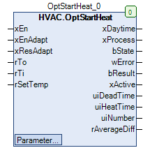

OptStartHeat (FB)¶
FUNCTION_BLOCK OptStartHeat
Short Description¶
Switch-on optimisation for heating operation ( principle: variable preheating time )Target: Room temperature = target temperature at the start of daytime operationTypical application: Zone control loop with heating valve
Portrayal¶

Interfaces¶
Inputs¶
Name Datatype
Range
Init-Value
Functional Description
xEn BOOL FALSE General release of the switch-on optimization
xEnAdapt BOOL TRUE Release of the data storage in the historical memory
xResAdapt BOOL TRUE Resetting the historical memory
rTo REAL Current outside temperature
rTi REAL Current room temperature
rSetTemp REAL Current room setpoint temperature in comfort mode/day mode
Outputs¶
Name Datatype
Range
Init-Value
Functional Description
xDaytime BOOL FALSE Release of the comfort / day mode ( Off = FALSE, On = TRUE )
xProcess BOOL FALSE Enable - Preheating process ( Off = FALSE, On = TRUE )
bState BYTE 0 Phase of preheating process ( 0=Off/Decativated, 1 = Test time, 2 = Dead time, 3 = Heating time, 4 = End of heating time )
wError WORD 0 Error state of the last preheating process
bResult BYTE 0 Quality of the last preheating process ( 0 = invalid, 1 = good, 2 = normal, 3 = poor )
xActive BOOL FALSE State of the clock channel of the weekly clock ( Off = FALSE, On = TRUE )
uiDeadTime UINT 0 Display of the current dead time duration ( min )
uiHeatTime UINT 0 Display of the current heating time duration ( min )
uiNumber UINT 0 Display of the total number of successful preheating processes
rAverageDiff REAL 0.0 Average absolute room temperature deviation of the last 10 successful preheating processes
Setpoints / Parameters¶
Name Datatype
Range
Init-Value
Functional Description
uiHGMin UINT 30 Minimum value - heating gradient ( min/K )
uiHGMax UINT 240 Maximum value - heating gradient ( min/K )
uiDTMin UINT 10 Minimum value - Dead time ( min )
uiDTMax UINT 180 Maximum value - Dead time ( min )
uiHTMin UINT 15 Minimum value - heating time ( min )
uiHTMax UINT 600 Maximum value - heating time ( min )
todMonFrom TOD TOD#07:00 Switch-on point in time - Monday
todMonTo TOD TOD#12:00 Switch-off point in time - Monday
xMonMode BOOL TRUE Mode - Switching periods - Monday
todTueFrom TOD TOD#07:00 Switch-on point in time - Tuesday
todTueTo TOD TOD#12:00 Switch-off point in time - Tuesday
xTueMode BOOL TRUE Mode - Switching periods - Tuesday
todWedFrom TOD TOD#07:00 Switch-on point in time - Wednesday
todWedTo TOD TOD#12:00 Switch-off point in time - Wednesday
xWedMode BOOL TRUE Mode - Switching periods - Wednesday
todThuFrom TOD TOD#07:00 Switch-on point in time - Thursday
todThuTo TOD TOD#12:00 Switch-off point in time - Thursday
xThuMode BOOL TRUE Mode - Switching periods - Friday
todFriFrom TOD TOD#07:00 Switch-on point in time - Friday
todFriTo TOD TOD#12:00 Switch-off point in time - Friday
xFriMode BOOL TRUE Mode - Switching periods - Friday
todSatFrom TOD TOD#07:00 Switch-on point in time 1 - Saturday
todSatTo TOD TOD#12:00 Switch-off point in time - Saturday
xSatMode BOOL TRUE Mode - Switching periods - Saturday
todSunFrom TOD TOD#07:00 Switch-on point in time - Sunnday
todSunTo TOD TOD#12:00 Switch-off point in time - Sunnday
xSunMode BOOL TRUE Mode - Switching periods - Sunday
sNotice STRING ‘Own Notice - click to change.’
Designation - Time switch
Global Variables¶
Name Datatype
Range
Init-Value
Functional Description
GV_OPTSTARTHEAT.rTOMinREAL -25.0 Minimum value - Outdoor temperature ( °C )
GV_OPTSTARTHEAT.rTOMaxREAL 25.0 Maximum value - outdoor temperature ( °C )
GV_OPTSTARTHEAT.rTIMinREAL 15.0 Minimum value - room temperature ( °C )
GV_OPTSTARTHEAT.rTIMaxREAL 30.0 Maximum value - room temperature ( °C )
GV_OPTSTARTHEAT.rDiffSetTempREAL 0.0 Deviation from the room target temperature at the end of the preheating process ( K )
GV_OPTSTARTHEAT.rDTDiffTempREAL 0.2 Increasing the room temperature to detect the end of the dead time ( K )
GV_OPTSTARTHEAT.uiPHMaxTimeUINT 720 Maximum duration of the preheating process
GV_OPTSTARTHEAT.rLimitResultWellREAL 0.5 Result display: Room temperature deviation - limit value for a good preheating process
GV_OPTSTARTHEAT.rLimitResultNormalREAL 1.0 Result display: Room temperature deviation - limit value for a normal preheating process
Functional Description¶
Test time (bState = 1)¶
Dead time (bState = 2)¶
GV_OPTSTARTHEAT.rDTDiffTemp for a period of at least 120s (= beginning of the heating time).Heating time (bState = 3)¶
GV_OPTSTARTHEAT.rDiffSetTemp.Heating time end (bState = 4)¶
Enable xEn¶
Output
State/Value
Notes
xDaytime FALSE xProcess FALSE bState 0 wError 0 bResult 0 uiDeadTime 0 uiHeatTime 0 uiNumber 0 rAverageDiff 0
Release xEnAdapt¶
Release xResAdapt¶
Storage
State/Value
Notes
Heating gradients
uiHGMax Dead times
uiDTMax Number of preheating processes
0
Input rTo¶
GV_OPTSTARTHEAT.rTOMin, maximum value = GV_OPTSTARTHEAT.rTOMax ).Input rTi¶
GV_OPTSTARTHEAT.rTIMin, maximum value = GV_OPTSTARTHEAT.rTIMax ).Input rSetTemp¶
Output xDaytime¶
Output xProcess¶
Output bState¶
Values
Stage
0 Off / Disabled
1 Test time active
2 Dead time active
3 Heating time active
4 Heating time end active
Output wError¶
Bit Cause
Error type
Notes
1 Maximum heating time exceeded
Error
4 Limit value violation Heating gradient
Warning
5 Limit value violation Dead time
Warning
6 Minimum heating time undercut
Warning
Output bResult¶
GV_OPTSTARTHEAT.rDiffSetTemp - rTi is used for the valuation.
Result
Limit
bResult Notes
less than
GV_OPTSTARTHEAT.rLimitResultWell1 Good preheating process
less than
GV_OPTSTARTHEAT.rLimitResultNormal2 Normal preheating process
greater than or equal to
GV_OPTSTARTHEAT.rLimitResultNormal3 Poor preheating process
Output xActive¶
Output uiDeadTime¶
Output uiHeatTime¶
Output uiNumber¶
Output rAverageDiff¶
Step 1: preheating process¶
Parameters uiHGMin¶
Parameters uiHGMax¶
Parameters uiDTMin¶
Parameter uiDTMax¶
Parameter uiHTMin¶
Parameter uiHTMax¶
Parameter todMonFrom** - sNotice¶
Global variable GV_OPTSTARTHEAT.rTOMin¶
Global variable GV_OPTSTARTHEAT.rTOMax¶
Global variable GV_OPTSTARTHEAT.rTIMin¶
Global variable GV_OPTSTARTHEAT.rTIMax¶
Global variable GV_OPTSTARTHEAT.rDiffSetTemp¶
Global variable GV_OPTSTARTHEAT.rDTDiffTemp¶
Global variable GV_OPTSTARTHEAT.uiPHMaxTime¶
Global variable GV_OPTSTARTHEAT.rLimitResultWell¶
Global variable GV_OPTSTARTHEAT.rLimitResultNormal¶
Visualization¶
Codesys¶
- InOut:
Scope Name Type Initial Comment Input xEn BOOL FALSE Enable ( Off = FALSE, On = TRUE ), FALSE in case of extension of useful time, sensor fault, etc., please connect externally
xEnAdapt BOOL TRUE Enable - Adaption ( Off = FALSE, On = TRUE )
xResAdapt BOOL FALSE Reset - Adaption ( Off = FALSE, On = TRUE )
rTo REAL Current outdoor temperature
rTi REAL Current room temperature
rSetTemp REAL Current setpoint temperature in daytime / comfort mode
Output xDaytime BOOL FALSE Release of the comfort / day mode ( Off = FALSE, On = TRUE )
xProcess BOOL FALSE Enable - Preheating process ( Off = FALSE, On = TRUE )
bState BYTE 0 Phase of preheating process ( 0=Off/Decativated, 1 = Test time, 2 = Dead time, 3 = Heating time, 4 = End of heating time )
wError WORD 0 Error state of the last preheating process
bResult BYTE 0 Quality of the last preheating process ( 0 = invalid, 1 = good, 2 = normal, 3 = poor )
xActive BOOL FALSE Condition of the clock channel of the weekly clock
uiDeadTime UINT 0 Display of the current dead time duration ( min )
uiHeatTime UINT 0 Display of the current heating time duration ( min )
uiNumber UINT 0 Display of the total number of successful preheating processes
rAverageDiff REAL 0.0 Average absolute room temperature deviation of the last 10 successful preheating processes
Input uiHGMin UINT 30 Minimum value - heating gradient ( min/K )
uiHGMax UINT 240 Maximum value - heating gradient ( min/K )
uiDTMin UINT 10 Minimum value - Dead time ( min )
uiDTMax UINT 180 Maximum value - Dead time ( min )
uiHTMin UINT 15 Minimum value - heating time ( min )
uiHTMax UINT 600 Maximum value - heating time ( min )
todMonFrom TOD TIME_OF_DAY#7:0 Switch-on point in time - Monday
todMonTo TOD TIME_OF_DAY#18:0 Switch-off point in time - Monday
xMonMode BOOL TRUE Mode - Switching periods - Monday
todTueFrom TOD TIME_OF_DAY#7:0 Switch-on point in time - Tuesday
todTueTo TOD TIME_OF_DAY#18:0 Switch-off point in time - Tuesday
xTueMode BOOL TRUE Mode - Switching periods - Tuesday
todWedFrom TOD TIME_OF_DAY#7:0 Switch-on point in time - Wednesday
todWedTo TOD TIME_OF_DAY#18:0 Switch-off point in time - Wednesday
xWedMode BOOL TRUE Mode - Switching periods - Wednesday
todThuFrom TOD TIME_OF_DAY#7:0 Switch-on point in time - Thursday
todThuTo TOD TIME_OF_DAY#18:0 Switch-off point in time - Thursday
xThuMode BOOL TRUE Mode - Switching periods - Friday
todFriFrom TOD TIME_OF_DAY#7:0 Switch-on point in time - Friday
todFriTo TOD TIME_OF_DAY#18:0 Switch-off point in time - Friday
xFriMode BOOL TRUE Mode - Switching periods - Friday
todSatFrom TOD TIME_OF_DAY#7:0 Switch-on point in time 1 - Saturday
todSatTo TOD TIME_OF_DAY#18:0 Switch-off point in time - Saturday
xSatMode BOOL TRUE Mode - Switching periods - Saturday
todSunFrom TOD TIME_OF_DAY#7:0 Switch-on point in time - Sunnday
todSunTo TOD TIME_OF_DAY#18:0 Switch-off point in time - Sunnday
xSunMode BOOL TRUE Mode - Switching periods - Sunday
sNotice STRING ‘Notice’ Designation - Time switch
- OptStartHeat.FB_Reinit (METH)
- OptStartHeat.mCalcAbsMin (METH)
- OptStartHeat.mCalcAverageDiff (METH)
- OptStartHeat.mCalcEspAbsMin (METH)
- OptStartHeat.mCalcResults (METH)
- OptStartHeat.mCheckClock (METH)
- OptStartHeat.mInitAverageDiff (METH)
- OptStartHeat.mInitCurrentData (METH)
- OptStartHeat.mInitHistoricalData (METH)
- OptStartHeat.mReset (METH)
- OptStartHeat.mResetAll (METH)
- OptStartHeat.mSpClassification (METH)